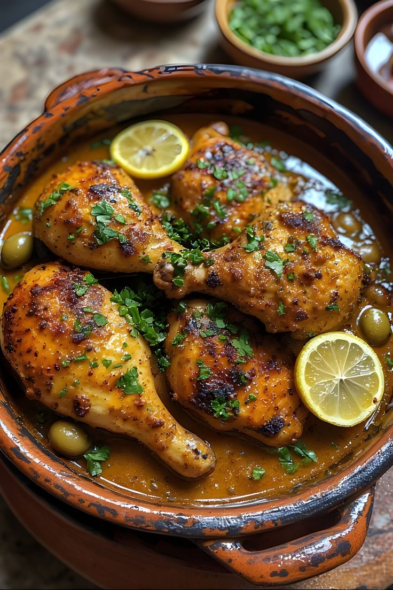

North Africa · Morocco
Chicken Tagine
Chicken slow-cooked with olives and preserved lemon in a cone-lidded clay pot.
About this dish
A tagine is both the name of the dish and the conical clay pot it cooks in. The cone traps steam, which falls back on the food so even tough cuts turn tender. This classic Moroccan version pairs chicken with preserved lemon, green olives, saffron and ginger, and is served with bread or couscous.
Ingredients
Servings:
- 8 bone-in chicken thighs
- 2 onions, grated
- 4 garlic cloves, crushed
- 3 tbsp olive oil
- 1 tsp ground ginger
- 1 tsp turmeric
- 1 tsp ground cumin
- 1 tsp paprika
- 1 preserved lemon, rind sliced
- 0.75 cup green olives
- 1 cup chicken stock
- 0.25 cup chopped fresh coriander
- A pinch of saffron threads, soaked in warm water
- Salt and pepper
Cooking instructions
Step-by-step method
- Mix the garlic, ginger, turmeric, cumin, paprika, salt and pepper with 1 tbsp of the oil. Rub into the chicken and marinate for 30 minutes.
- Heat the remaining oil in the tagine (or a wide heavy pot). Brown the chicken on both sides, then set aside.
- Cook the grated onions in the same pot for 5-6 minutes until soft, then add the saffron water and stock.
- Return the chicken, cover with the lid, and simmer gently for 45 minutes.
- Add the preserved lemon and olives and cook uncovered for 10-15 minutes until the sauce thickens.
- Scatter with fresh coriander and serve with warm bread or couscous.
Chef's tips
Taste and adjust the seasoning at the end. Use the servings buttons above to scale the ingredients, and keep the heat low whenever a recipe says to simmer.
Watch a tutorial
Video not loading? Watch on YouTube.
Nutrition facts
| Nutrient | Amount |
|---|---|
| Calories | 520 kcal |
| Protein | 38 g |
| Carbohydrates | 8 g |
| Fat | 36 g |
| Fibre | 2 g |
Where it comes from: Morocco
More recipes to try
- Jollof Rice (Nigeria)
- Injera (Ethiopia)
- Bunny Chow (South Africa)
- Isombe (Rwanda)